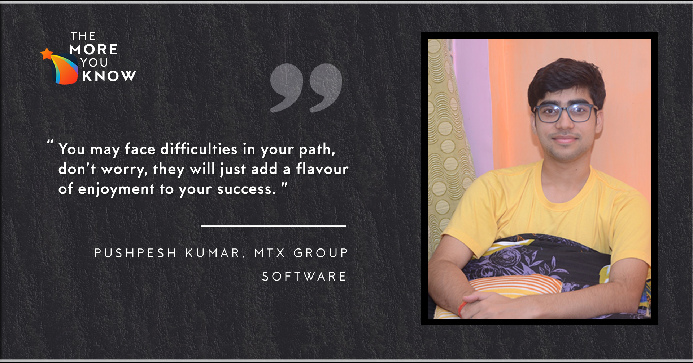

June 24, 2021
Hi!
I am a Y18 student from the Department of Civil Engineering. I feel delighted to have got this
opportunity to talk about my thoughts, learnings & experiences that I captured during the last
internship season, and how I sailed through it. In the article further, I'll take you through my
preparation phase - how I chose my profile and how I developed the requisite skills, the risks I took
and how that added to my struggle, and last but not least - how everything paid off and I secured MTX
Group!
Before I start, let me brief you about the college engagements I had by the end of 2nd year. I was the
Core Team Member of the Operations team at Counselling Services and the DUGC students' nominee for my
department. Also, I was an active member of KoS - The dance club! I managed to maintain a decent CPI of
7.8 on my internship resume with all these in place.

The Preparation
I was a part of the Nutanix Summer of Code, organized by the CSE department in my 1st-year summer break.
This was a prominent addition to my resume before the end of 2nd year. I wanted to do something similar in
my 2nd year summers, but unfortunately, it was corona everywhere. While adjusting to the new normal, I
planned to let everything pass and prepare for the upcoming internship season. After talking to a lot of
seniors (it helps a lot !!!), I finally deduced that a good command of DS and Algo is a must (trust me on
this) for the majority of profiles one's targeting. Just remember, as undergrads, we rarely have an idea
of what a profile means in a corporate setup, so there's nothing wrong to intern in any profile rather
than limiting yourself with one or two. You can prioritize! My preference order was Data Analyst/Data
Science, then Software Development, and then any other profile like Finance or Business Development.
Though I was more interested in the profile of Data Analyst, I focused equally on Software Development as
well. Seniors helped me with the relevant resources that included study materials for both data and
software profiles. Let me mention separately what all things were there and what I was able to do before
the start of the intern season -
Data Analyst/Data Science
Puzzles from brainstellar - highly recommended
HSO201, Probs and Stats - a go-through is a must; I did the course in my 4th sem, so a revision was
needed. Any alternative (ex. Khan academy YT videos) may also be enough to get the required knowledge.
"50 challenging problems" book - recommended, at least go through the solutions once, I did around the
first 35-40 of them.
Puzzles from geeksforgeeks - not necessary, just for fun and to keep your mind furnished, I did all
(around 250)
Good command on DS and Algo (details mentioned below in the next section)
Miscellaneous - Writing basic SQL queries is needed along with some ideas of ML. Reading articles and
blogs online will be sufficient for these.
Software Development
DS and Algo - InterviewBit practice problems/GFG must do coding problems: time complexity, arrays,
strings, stack and queue, heaps and maps, divide and conquer are some must-do topics, knowledge of graphs
is also expected by many firms, Dynamic Programming is rarely asked (solving the standard problems should
be sufficient), topics like linked lists and trees are necessary only for interviews
"Tests from archives" by Pclub - highly recommended; I gave all the contests mainly for learning purposes.
Contests on Codeforces - try to participate in as much as you can (div2 and div3 level contests). It
increases speed and accuracy.
Miscellaneous - Writing SQL queries, questions on Object-Oriented Programming Systems (OOPs), and
networking is also asked in interviews. These are end-moment stuff. It hardly takes a week or two to
prepare well enough by reading online articles and blogs.
Apart from these, I did online courses on Coursera (thanks to the IITK subscription), inclusive of
projects that eventually added to my resume. These courses mainly covered Statistics and a gist of R
programming language (used in Data Science) and SQL. Also, luckily, I got a DE course in my 5th sem,
"Machine Learning and Data Analysis", which proved sufficient to give me an idea about basic machine
learning stuff needed to answer MCQs in the tests. Don't expect to get them all right (it's a vast topic,
guys!)
Once done with most things that I have mentioned above, I was confident of securing a good internship.
"Small Dream is a Big Crime '' - keeping this famous saying by APJ Abdul Kalam sir in mind, I fixed a
target for myself. I applied for only those companies that could offer me a PPO > 20 LPA. At that time,
Goldman Sachs, Cisco, Nutanix, American Express, etc., were a few names in my mind. For a Civil guy, it's
indeed a very ambitious target. It wasn't easy at all but possible.
The Struggle was Real
As I said, I was confident with my preparation but no matter how prepared you are, rejections are hard to
deal with! Tests and shortlists started to flow in on the SPO portal. From here started the phase of low
motivation for me. I failed to get shortlisted in many firms because I couldn't perform well in the tests
for multiple reasons. At times I couldn't solve the questions, or all the test cases didn't pass, etc. .
In the chaos, I managed to get shortlisted in AB InBev, Cisco, HSBC in the early days, and OYO later. I
got rejected in AB InBev and OYO after the GD and just before the HR round in Cisco and HSBC.
But wait, it was still the beginning and self-analysis for why all these rejections were a must! The
primary piece of advice here is to prepare your resume to its best. Don't write anything in which you are
not confident enough, or you can't handle a discussion around it. For example, I wrote MTH102 (Linear
Algebra and ODE) in my' related coursework'. HSBC demands reasonable control on linear algebra, but I
couldn't answer in the interview. That was the only thing I messed up, and it was good enough to get
rejected in the early phase of the internship drive. Try to drive the interview in your favorable
direction, leading to your strengths, maybe POR, or any particular project. Also, if you don't know
anything related to the question, go straight out & accept it without wasting time. Make it a habit to
speak out your thought process while you're attempting a problem in front of the interviewer.

Okay, so after all these failures, being worried was natural. The focus was to keep updating my resume as
I kept on learning new things, doing online courses, and preparing myself mentally to go off-campus.
Fortunately, I was at home. My elder brother was also here(who himself graduated last year in 2020 from
IIT Roorkee). He motivated me to stick to the funda of "No Risk, No Gain". My family never let me lose
hope, and I continued strongly. Acknowledging my brother's suggestion, I opted for Google Summer of Code
(GSoC) as a backup option because open-source contributions establish your credibility and are widely
respected in the IT Industry. I was fully dedicated to GSoC in the last 2-3 months, and I stopped applying
for any internship opportunities through SPO. I deserved better, so if not a great company, then at least
a great project like GSoC. Leaving the tests of companies like Axis Bank was a big step for me. The risk
of greatest magnitude was that if I am not selected for GSoC, I would be left with absolutely nothing.
Finally, MTX Group arrived
It was only a few days since I submitted the proposal for GSoC, I saw an internship opening in the
software development profile, and it was the MTX Group. I was very happy and felt fortunate because this
time, I was damn prepared, and only a revision was needed. I got through the resume shortlisting, and the
interviews began.
Round 1 - Of course, it was highly technical, and I was grilled well. I did some live coding for 3-4
questions in my preferred language (C++). If I remember correctly, they included sorting algos, trees,
linked lists, and a few standard ones, and I did it all. Then I was asked to write basic SQL queries &
some conceptual questions around OOPs. This round lasted for about 40 minutes, and I was bang on in it!
Round 2 - This was more or less the same as the previous round except for the interviewer. The coding
questions were slightly more complex, targeted to judge my thinking ability and approach (as told by the
interviewer in the end). Though I couldn't solve the problem completely, the discussion was good.
Thereafter, a short conversation on OOPs concepts and some good level SQL queries - I wrote 4 out of 5
correctly. I didn't have any idea about the last one, so, left it unattempted. The interviewer's remark at
the end felt promising, and I was through to the final round.
Round 3 (HR) - Like any other HR round, it was meant to test my confidence, communication skills & how
well I knew the company. I had done my homework right (research about the company), which helped me in the
final round. Within 20 mins, the interviewer said the final details will be mailed to me.
The next day, I got a call from the SPO confirming my selection. Yes! It was a relief, not only for me but
for my family as well. And now, I was nowhere in the position to continue with GSoC any further - ideally,
I shouldn't have done that, but it was the same situation like getting into IIT after 2 yrs of immense
hard work, then why would I care for BITS, LOL!.
Conclusion
You must have an aim - it helps in many ways! Following are a few examples(not exclusive - you can have
anything)
Intern at any firm/MNC/specific companies...
Intern with stipend not less than __k
Intern with a chance of PPO
Intern with an opportunity of PPO of a package not less than __k
Don't want a company, a good project would do
… etc.
Having a goal keeps you motivated, focused. You keep learning & working hard. Having said that, it's
immensely important to have facts & data backing the target you define. It should be a very well thought
out decision considering your potential, surrounding & situations around you & a practical gauge of risk
you can afford to take.
Above all, have patience! Believe in your preparations, and don't let the rejections demoralize you. The
luck factor is unavoidable, it has a significant role to play, but it will always come after your
preparation in the queue.
Utilize your 2nd year summers to the fullest, and don't hesitate to ask for help from your seniors while
preparing for internships. Consider internship as a tool to explore your field of interest to experience
its real-life usability. It's one way to figure out if you want to continue working in the same area or
not. We live in a competitive environment, so peer pressure is bound to come into the picture. Don't cease
to accept it. It's just a matter of time and patience. Everything works out in the end, maybe through SPO
or off-campus (through LinkedIn, etc.). Even if it does not work out, bro! Relax! It is not the end. An
8-10 weeks internship will go away, your hard work & efforts will stay & you can always create enough
opportunities for yourself to shine out.
For me, it started in Aug '20 & ended in April '21, probably the longest. So, After reading this, if you
manage to feel my emotions, I won't be surprised if it helps you! Feel free to reach out to me, not only
for any intern gyaan, timepass bhi chalega dost!
- Pushpesh Kumar, Edited By : Tulika Shukla